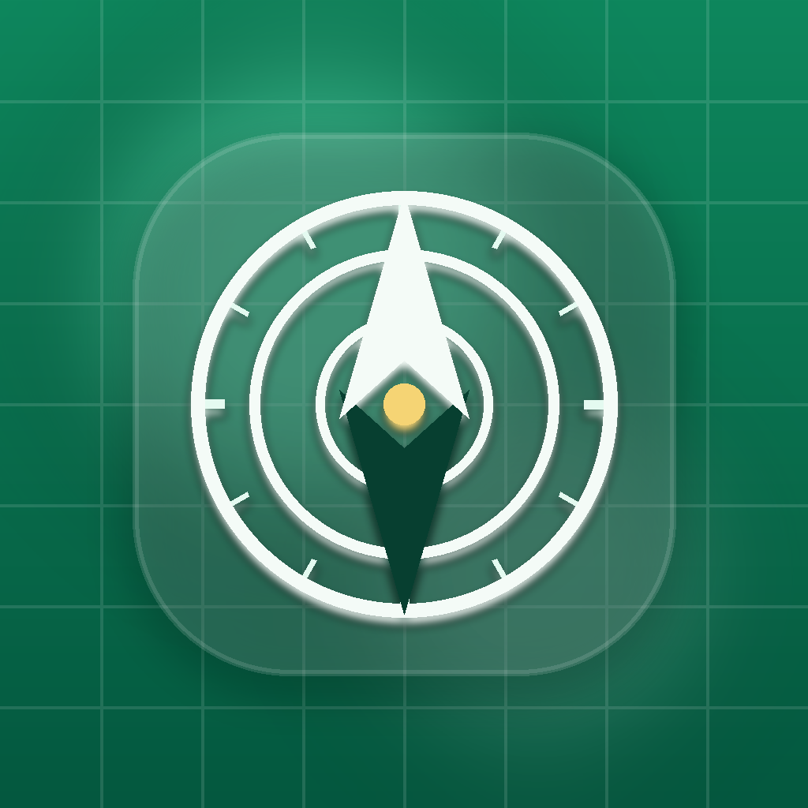

NurtoolsOne free app that handles your Qibla compass, prayer times, Zakaat calculation, Tasbih, Du'as, and Hijri calendar - beautifully, accurately, and offline.
✓ 100% Free ✓ No Ads ✓ No Sign-Up ✓ Works Offline
8+
Islamic Tools
★★★★★
Play Store Rating
0 Ads
Forever Ad-Free
Offline
Works Anywhere
What's inside
Six precision tools built for accuracy, speed, and simplicity - no bloat, no distractions.
Know exactly where to face - instantly. Real-time GPS compass with calibration guidance so you can pray with confidence anywhere in the world.
Never guess again. Location-based prayer times calculated to the minute using your preferred method - Fajr, Dhuhr, Asr, Maghrib, and Isha.
Fulfil your obligation with certainty. Calculate Zakaat across cash, gold, silver, and investments with live Nisaab values and multiple currencies.
Deepen your dhikr. A distraction-free digital counter with haptic feedback and custom target goals - so nothing breaks your focus.
Stay connected to the Islamic year. View your Hijri date and never miss Ramadan, Eid, or other important observances with upcoming event alerts.
The right words, every time. Authentic duas for daily situations - with Arabic text, transliteration, and translation - available offline.
Also included
Why Nurtools?
No account. No tracking. Your location is used on-device only - never sent to a server.
Prayer times and Qibla direction calculated with established Islamic algorithms, not approximations.
No ads, no push notifications selling you things, no social feeds. Just the tools you need for ibadah.
What users say
"Finally an Islamic app that does everything I need without bombarding me with ads. The Qibla compass is spot-on and the UI is clean. JazakAllahu Khayran!"
Khalid N.
Google Play
"The Zakaat calculator saved me so much time this year. It handled all my asset types perfectly and showed me the current Nisaab automatically. Love it!"
Javed N.
Google Play
"I travel constantly and this app works offline, which is a game-changer. Prayer times and Qibla wherever I am, no internet needed. Highly recommend!"
Nadim F.
Google Play
Questions
Yes - 100% free to download and use. There are no in-app purchases, no subscription, and no ads. Ever. Developer support is always welcomed and appreciated.
Yes. Most features - including prayer times, Qibla compass, Tasbih, Du'a library, and Asma ul Husna - work fully offline. Only live Nisaab values for Zakaat require an internet connection.
The compass uses your device's magnetometer and GPS location to calculate the great-circle bearing to the Kaabah. A calibration prompt guides you to correct any magnetic interference before you rely on it.
Nurtools supports multiple major calculation methods including Muslim World League, Egyptian General Authority, ISNA, Umm al-Qura, and more - so you can match the convention used in your country or mosque.
No. Nurtools does not require an account, does not store your location on any server, and does not share your data with third parties. Location access is used on-device only to calculate prayer times and Qibla direction.
Currently Nurtools is available on Android via Google Play. An iOS version is on the roadmap - follow us for updates or send us a message to express your interest.
Join Muslims around the world who rely on Nurtools for their daily ibadah. Free, always.
Download Free on Google PlayNo ads · No sign-up · Works offline · Free forever